Overview
NetBanking powers some of India's most critical and high-value digital payments, yet the experience has remained slow, fragmented, and difficult to use, especially on mobile.
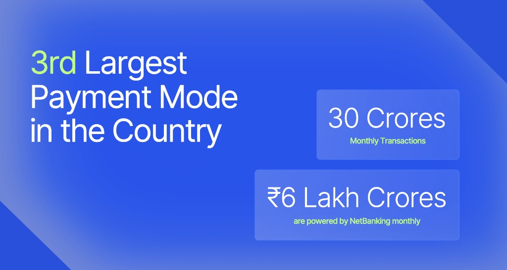
I worked on NetBanking 2.0, a RBI-mandated initiative led by NPCI Bharat BillPay, to reimagine NetBanking as a modern, interoperable, and real-time payment system, designed to work seamlessly across merchants, payment aggregators, banks, and users.
The goal was not to redesign screens, but to rethink the entire payment journey: from how users authenticate and authorize payments, to how merchants onboard, how banks integrate, and how settlements happen behind the scenes.
Why NetBanking needed a rethink
Despite being one of India's largest payment modes for high-value transactions, NetBanking suffered from systemic issues:
- Fragmented one-to-one integrations between banks and payment aggregators
- Slow, non-standardized settlements (T+1 to T+8 days)
- High friction for users: repeated logins, OTP failures, redirects
- Poor mobile experience
- Inconsistent merchant onboarding and dispute resolution
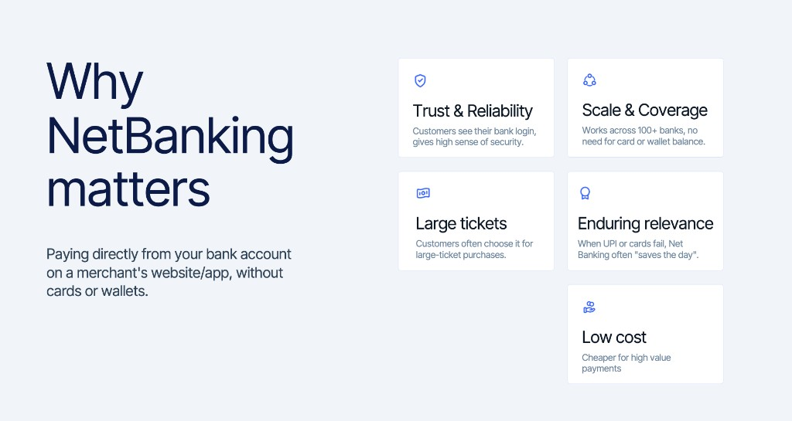
At the same time, NetBanking carried strong trust signals; users preferred it for large transactions because it was bank-native.
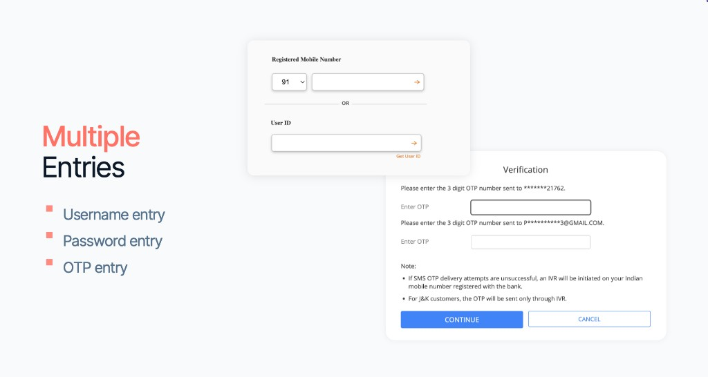
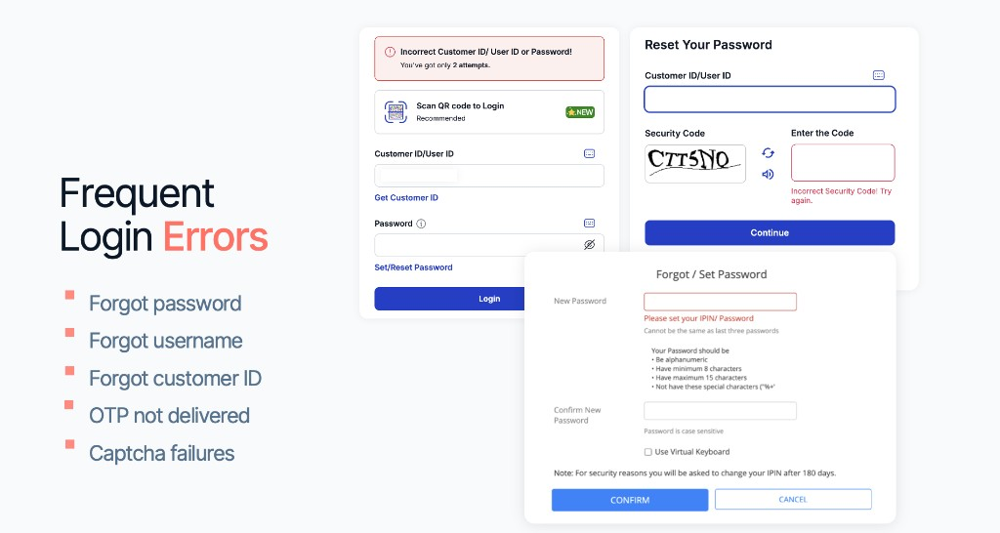
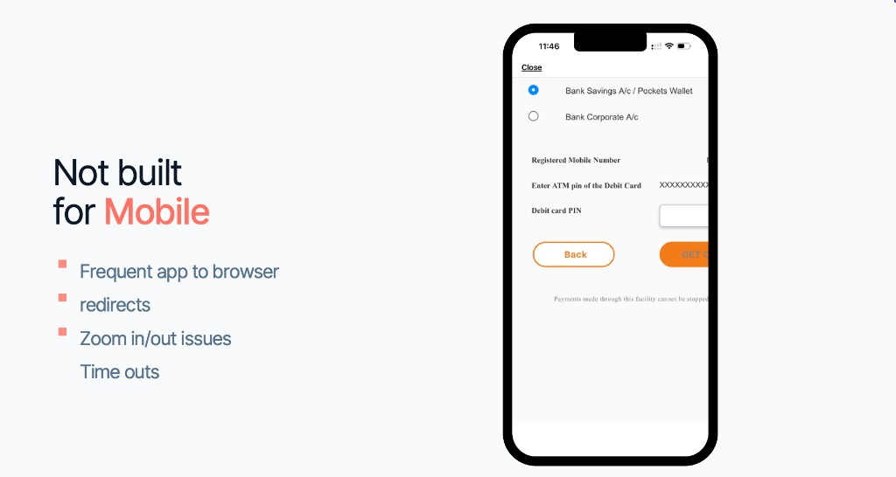
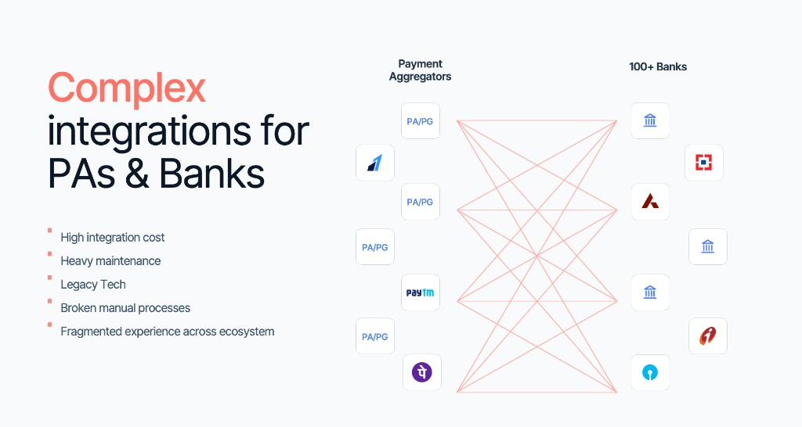
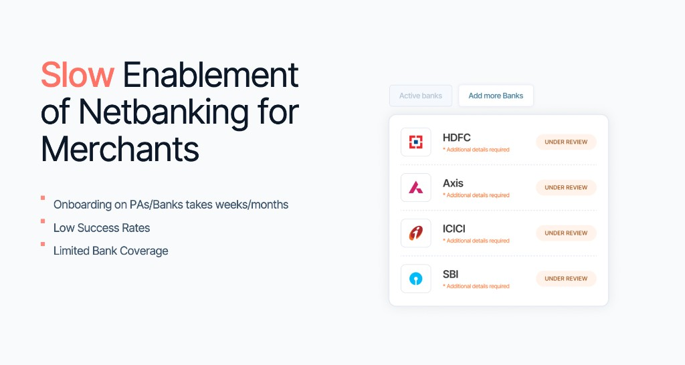
The opportunity: Preserve trust, while radically improving usability, speed, and scale.
My role & ownership
I led end-to-end product and experience design for NetBanking 2.0, working at the intersection of user experience, platform design, and system constraints.
My ownership spanned:
- Primary user research and usability testing
- Designing new retail, corporate, and ERP payment journeys
- Defining authentication and authorization patterns
- Creating SDK-level UX standards for bank apps
- Translating ambiguity into structured flows, trackers, and guidelines
- Aligning design decisions with regulatory, security, and settlement constraints
This work required balancing user needs, bank risk frameworks, payment infrastructure realities, and RBI-mandated requirements, while designing for scale across the entire ecosystem.
Designing for a multi-stakeholder ecosystem
NetBanking 2.0 was not a single user flow; it was a platform serving multiple actors simultaneously:
- Retail users making everyday and high-value payments
- Corporate users operating within maker–checker workflows
- Merchants and ERPs needing predictable payment confirmation
- Payment Aggregators integrating once instead of bank-by-bank
- Issuing and beneficiary banks enforcing security and compliance
- NPCI operating as the central clearing and settlement layer
Every design decision needed to work across this ecosystem, not just for one user group.
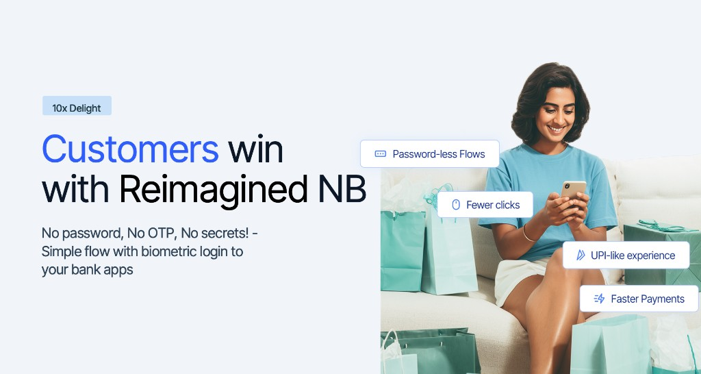
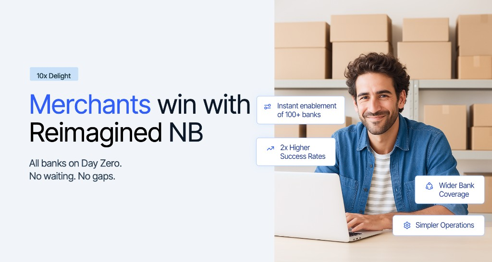
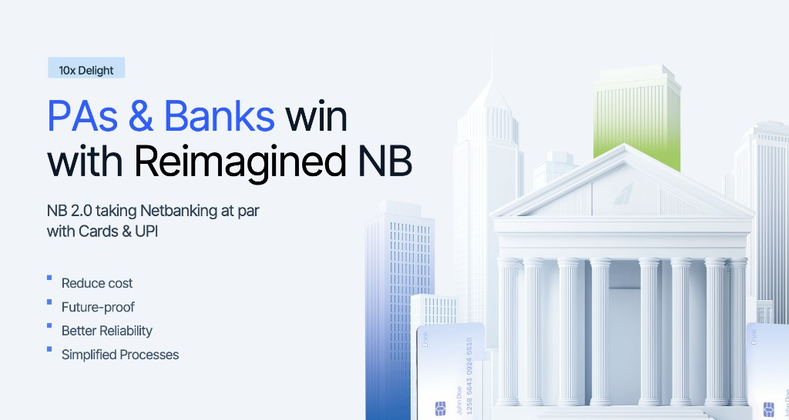
Research that shaped the architecture
To ground the system in real behavior, I led nationwide qualitative research including FGDs and usability testing.
What we explored
- How users choose payment modes for different ticket sizes
- Perceived security vs convenience trade-offs
- Pain points with OTPs, redirects, and mobile logins
- Trust signals users rely on during high-value payments
Key insights
- Users tolerate friction for trust, but not unpredictability
- Bank apps are perceived as the most secure environment
- Mobile is preferred, but only when authentication feels reliable
- Users are open to QR and intent-based flows when the bank remains "in control"
These insights directly influenced where authentication happens, how authorization is structured, and why bank apps became the core experience surface.
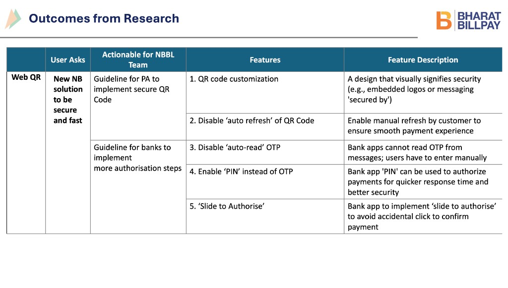
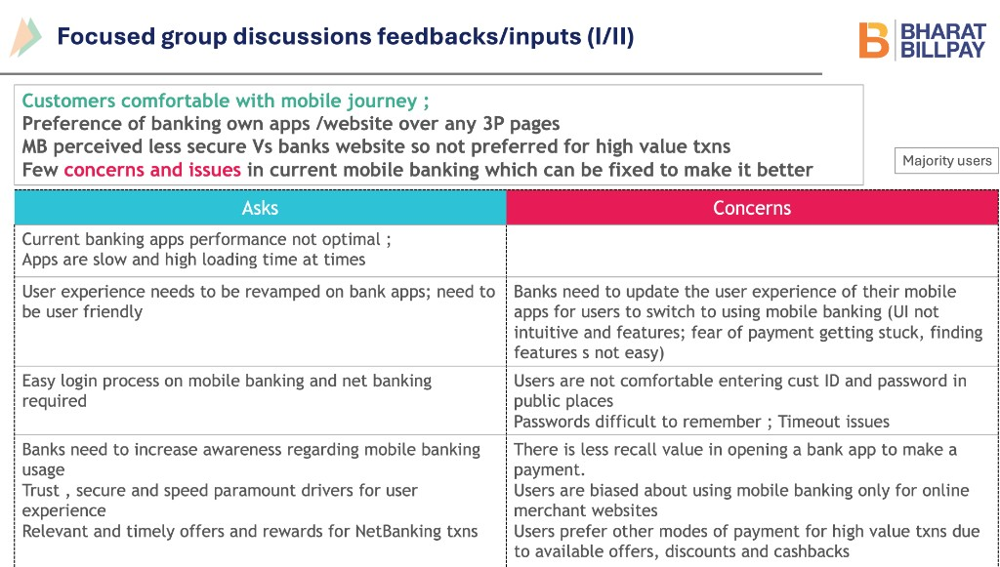
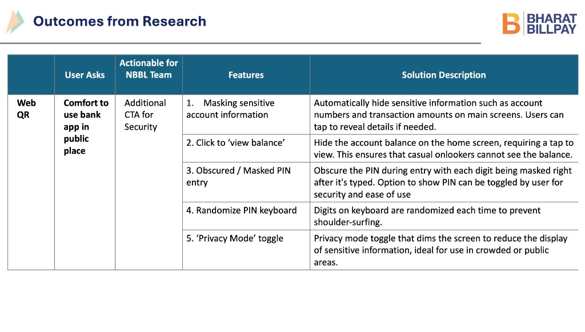
Key Product Decisions
Preserving trust while modernizing a legacy payment experience involved:
1. Moving authentication inside bank apps
- Users authenticate within trusted banking apps
- Sensitive actions remain inside regulated bank environments
- Merchants receive standardized confirmation states
This improved:
- Perceived trust
- Security clarity
- Transaction confidence
- Cross-bank consistency
At the same time, it enabled banks to retain flexibility over their own authentication policies and risk frameworks.
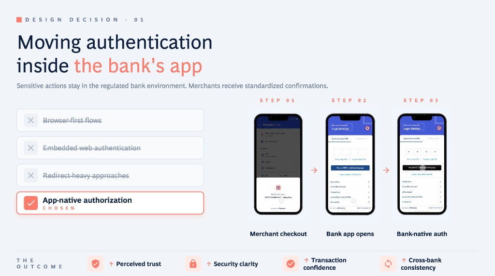
Traditional NetBanking flows relied heavily on browser redirects, passwords, and OTP-heavy interactions that created:
- High drop-offs
- Device-switching friction
- Security concerns
- Inconsistent experiences across banks
2. Replacing Redirect-Heavy Journeys with QR & Intent Flows
- QR-based authorization journeys
- Mobile intent-based payment flows
- Two-device authentication experiences
QR and intent-based flows also allowed:
- Faster transaction initiation
- Better mobile reliability
- Reduced dependency on fragile browser sessions
- More scalable interoperability across merchants and banks
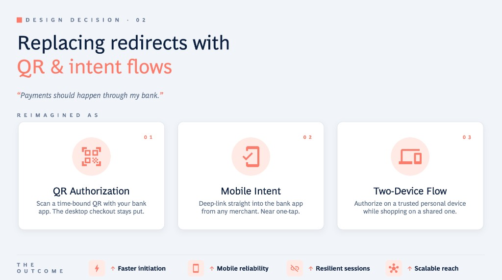
These patterns reduced friction while preserving the mental model users already trusted:
“Payments should happen through my bank.”
Traditional NetBanking journeys required:
- Multiple redirects
- Manual bank selection
- Repeated credential entry
- Browser instability during checkout
3. Designing Configurable Authorization Frameworks
- Banks could define their own authentication layers
- Step-up authorization could trigger based on transaction amount or risk level
- Different approval structures could exist for retail and corporate journeys
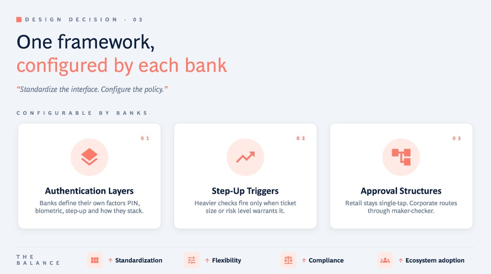
A fully standardized system would simplify UX — but banking regulation and risk policies differ significantly across institutions.
4. Treating Failure States as First-Class Experiences
We explicitly designed for:
- Timeouts
- Reversals
- Pending states
- Deemed-success flows
- Failed settlement propagation
- Interrupted authorization
This ensured users always understood:
- What happened
- Whether money moved
- What to do next
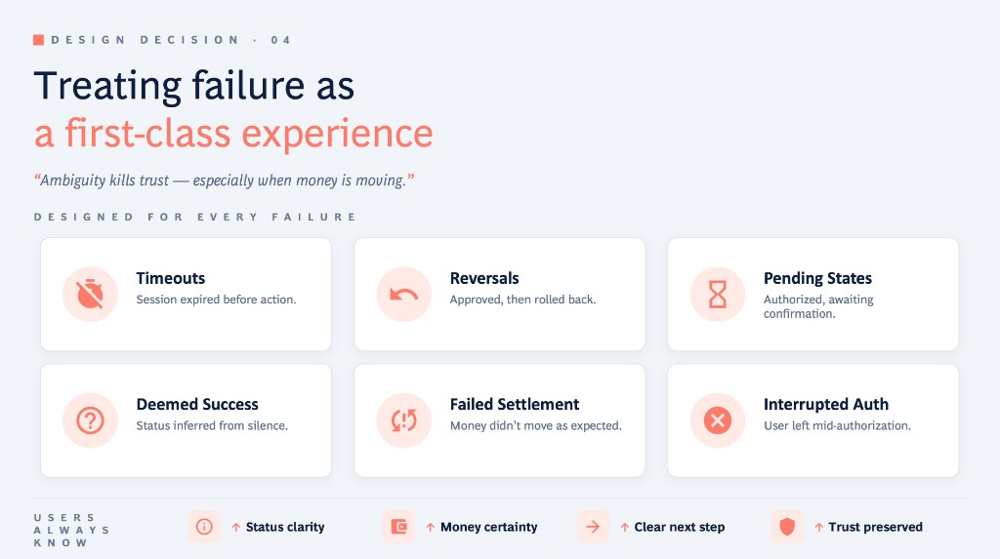
Reducing ambiguity was critical for maintaining trust in high-value transactions.
5. Designing Beyond Screens — Toward Platform Governance
I helped define:
- SDK-level UX standards
- Merchant checkout rules
- Error handling patterns
- QR behavior standards
- Back-navigation behavior
- Bank app authorization structures
This ensured NetBanking 2.0 could scale consistently across:
- Banks
- Merchants
- Payment aggregators
- ERP systems
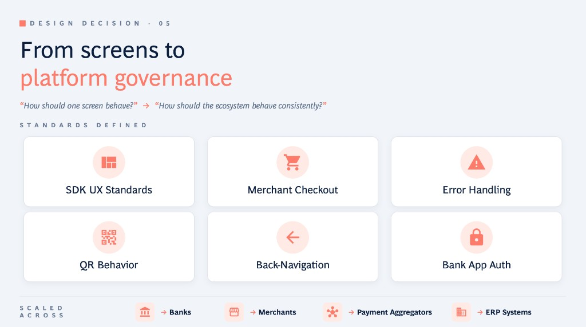
Reimagining the NetBanking experience
Instead of a single linear journey, NetBanking 2.0 supports two optimized retail paths (desktop web + QR and mobile intent), depending on device and context.
1. Retail: Web + QR journey
Designed for desktop users making high-value purchases.
- User selects NetBanking on merchant checkout
- A secure, time-bound QR code is generated
- User scans QR via their bank app
- Authentication and authorization happen entirely within the bank app
- User is redirected back to the merchant with confirmation
This removed fragile browser redirects while preserving trust.
2. Retail: Mobile intent journey
Designed for mobile-first behavior.
- User selects NetBanking on mobile checkout
- Chooses their bank app
- Deep-linked intent opens the bank app directly
- Payment is authorized inside the bank app
- User is routed back to the merchant app
This reduced friction to a near one-tap flow while remaining bank-native.
Corporate & ERP flows
Corporate payments introduced additional complexity:
- Maker–checker hierarchies
- Multi-level approvals
- Pending, approved, rejected, and settled states
- ERP visibility and reconciliation requirements
I designed maker–checker journeys for both merchant platforms and ERP systems, ensuring:
- Clear visibility of approval status
- Seamless transition between ERP, bank app, and settlement confirmation
- Authorization logic handled securely within bank systems
- Merchants receive reliable transaction state updates
This work ensured NetBanking 2.0 could support enterprise-grade payments, not just consumer checkout.
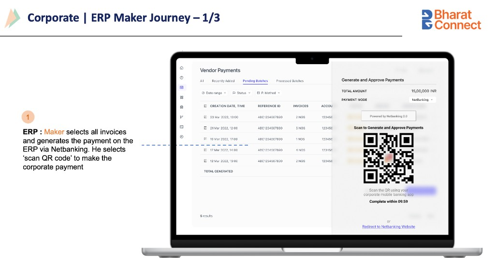
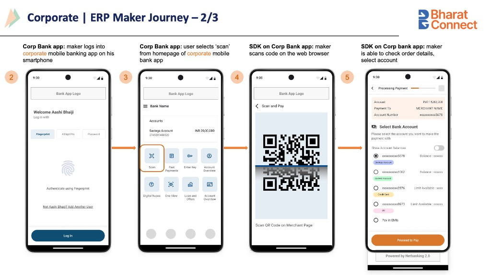
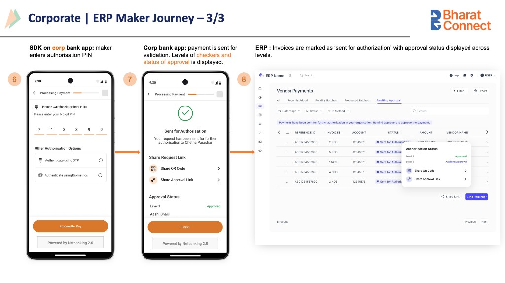
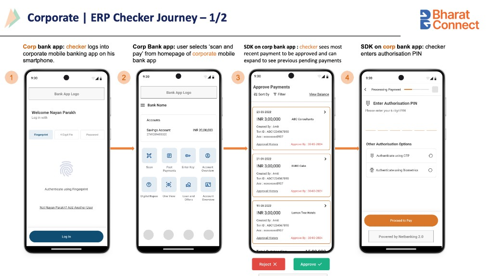
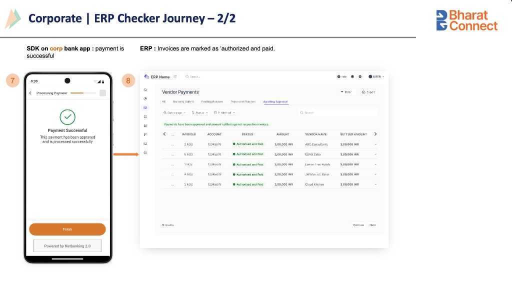
From screens to systems
Beyond journeys, I worked closely with product and engineering teams to ensure experiences aligned with:
- Pre-settlement and post-settlement API flows
- Ledger-based real-time settlement logic
- Status propagation across banks, PAs, and merchants
While not exposing technical complexity to users, the UX was designed to accurately reflect system states, reducing confusion, disputes, and trust breakdowns.
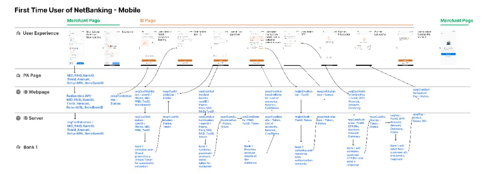
Platform governance & design standards
To ensure consistency at scale, I authored design and UX standards that banks and partners could adopt:
- SDK-level UX patterns for bank apps
- Merchant checkout placement and behavior rules
- Error handling and recovery guidelines
- Visual hierarchy and perceived-security principles
This ensured NetBanking 2.0 would feel uniform and reliable, regardless of the bank or merchant.
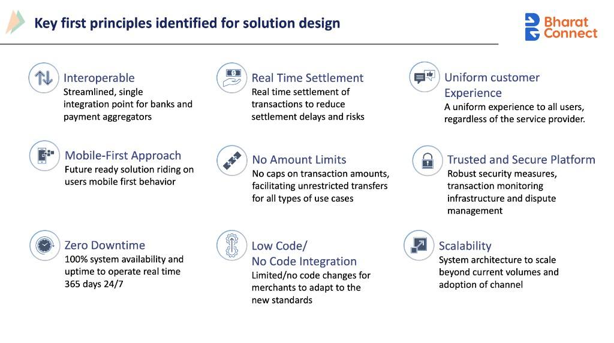
Impact & outcomes
- Designed an end-to-end interoperable NetBanking platform approved under RBI mandate
- Co-created with banks and payment aggregators for ecosystem adoption
- Enabled mobile-first, bank-native payment journeys
- Reduced integration complexity for merchants and PAs
- Positioned NetBanking as a modern alternative alongside UPI and cards
Reflection
1. Regulatory Constraints Shaped Every Interaction
Authentication needed to remain within regulated banking environments
- Communication patterns had to comply with anti-phishing requirements
- Authorization rules varied across banks
- High-value transactions required stronger security controls
2. Every Bank Operated Differently
We had to design :
- Configurable interaction models
- Standardized UX guidelines
- Flexible SDK structures
- Adaptable authorization patterns
3. Trust Was More Important Than Speed
Research consistently showed that users were willing to tolerate friction during high-value payments, as long as they trusted the system.
4. Corporate Payments Introduced Additional Complexity
Unlike consumer payments, these flows could not rely on linear mobile-first assumptions.
5. Stakeholder Alignment Was a Product Problem
The project required alignment across:
- Banks
- Payment aggregators
- Merchants
- Compliance teams
- Legal stakeholders
- Engineering teams
- Regulatory leadership
6. Speed & Ambiguity Coexisted Constantly
In several cases:
- Flows changed within days
- New edge cases emerged continuously
- Requirements evolved mid-sprint
NetBanking 2.0 wasn't about making payments "look better"; it was about making a national payment system work better for everyone involved.